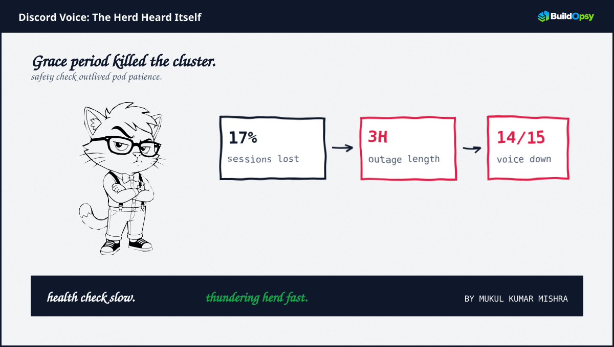
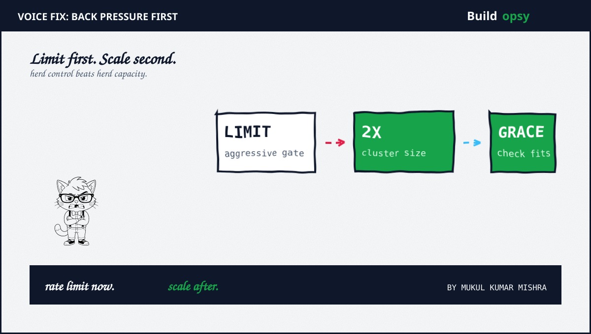

1. The Scaling That Scaled the Wrong Thing
Discord voice is a long-lived session service on Erlang, fronted by Kubernetes. The intent was vertical scaling for headroom. The tool was a safety check before terminating old pods. The check read state that grew with history. The duration grew with state. At some width the check outlived terminationGracePeriodSeconds.
Kubernetes then stops waiting. SIGKILL arrives. The pod is dead regardless of whether the check promised to finish. When many pods share the same rollout, the same overdue check fires together. Many pods die together. That is the thunder. The herd is the clients that notice.
Clients reconnect fast because voice is latency sensitive. Millions of sessions retry at once, not spread over minutes. The control plane that scheduled the scaling now schedules the recovery, under the exact load the scaling tried to avoid.
2. Why The Cluster Cascaded
Voice session state is memory heavy plus connection heavy. Each reconnect allocates buffers, replays presence plus revalidates routes. At thunder scale the memory allocator becomes the scheduler. US East exhausted first. The region that held the most sessions held the most risk.
Fourteen of fifteen voice instances dropped after the flood. Targeted restarts failed because the target re-flooded. Full cluster restarts failed for the same reason. Restart is a capacity action. The incident needed an admission action.
Erlang's preemptive scheduling saved the remaining beam but not the storm. The service that prides itself on soft real-time hit a hard real-time edge. The deadline was not in code. The deadline lived in the deployment manifest.
3. The RPS Model
Assume 200 million monthly voice participants with 8 million concurrent voice sessions at peak. Each session holds one WebSocket plus one media path. Reconnect is one auth plus one session resume plus one presence fan-out, roughly 3 operations per client. A thunder that touches 17 percent, about 1.36 million sessions, generates about 4.1 million operations in the reconnect window.
If the window is 45 seconds before rate limits engage, the burst is about 91,000 RPS of reconnect plus 45,000 RPS of presence replays. The steady voice control plane at that hour might be 12,000 RPS. The herd multiplies baseline by nearly ten times for a full minute.
Targeted restarts added another multiplier. Each restart re-triggered the same safety check plus the same grace overflow plus the same death plus the same reconnect. Two restarts in 20 minutes double the incident cost without doubling the learning.
| Workload | Scenario | Modeled RPS |
|---|---|---|
| Steady voice control | 8M concurrent sessions | 12k avg |
| Reconnect burst 17 pct | 1.36M sessions, 3 ops each, 45 sec | 91k peak |
| Presence replay | fan-out per reconnect | 45k peak |
| Total with retries | no limits for first 45 sec | ~148k |

4. The Fix That Actually Fixed It
The recovery that worked applied back pressure before capacity. Aggressive rate limits at the edge thinned the herd. Only then did doubling the cluster help, because the doubled cluster no longer met the full thunder at once. Order mattered. Scale without limits replays the incident faster. Limits without scale prolongs degraded service. Together they converge.
The durable fix moves the safety check inside the grace or outside the critical path. Split the check into a pre-check that is bounded by time plus a post-check that can run after drain. Set the grace to exceed the p99 of the bounded check by at least two times. Alert when any check exceeds 70 percent of grace for three consecutive rolls.
Admission is now a budget. Voice resumes should be token bucket gated per instance plus per region. Presence replays should be coalesced per channel. Reconnect storms become a managed queue, not a flood.
5. The Cost Model
Assume the doubled cluster is 40 extra c6g.xlarge equivalents at $0.136 per hour, about $5.44 per hour plus 3 hours is $16.32 direct compute plus 12 hours of held headroom is $65. That is trivial. The incident cost lives elsewhere. Support, incident bridges plus customer impact dominate.
At 1M RPS thought experiment, the herd lesson saves more than vertical scale ever could. Limiting reconnects from 148k to 35k per region via token buckets cuts origin work by 76 percent. If each voice operation costs $0.0000015, the uncontrolled burst for one hour is $795. Controlled is $189. Over a month of recurring rolls without the fix the delta exceeds $18k in origin alone, before support plus churn.
| Cost center | Modeled monthly | What moves it |
|---|---|---|
| Held headroom | $1,950 | 2x size held 12h per week |
| Uncontrolled burst | $19k at 1M scale | 148k RPS, 1 hour per week |
| Controlled burst | $4.5k at 1M scale | 35k gated RPS |
| Delta | ~$14.5k saved | Limits before scale |
6. The Verdict
Grace periods feel like safety nets until they act as kill timers. Health checks that outlive grace do not keep pods alive. They schedule pods to die together. The herd that follows is not a mystery. It is the clients doing exactly what they were designed to do when their server disappears.
The fix is boring in the right way. Bound every check to less than half the grace. Gate every reconnect with a bucket. Scale only after the bucket holds. That order turns a thundering herd into a queue that a cluster can absorb.
The herd was not misbehavior. The herd was the design on its worst day.
Sources and Method
Incident shape from public daily.dev summary of Discord voice global incident video (May 2026) plus Kubernetes graceful termination docs. RPS plus cost numbers are a labeled scenario model. Architecture advice is at system level, not a reproduction guide.